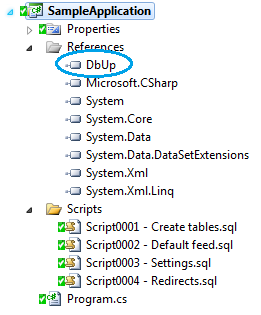

DbUp is a .NET library that helps you to deploy changes to SQL Server databases. It tracks which SQL scripts have been run already, and runs the change scripts that are needed to get your database up to date.
Getting started
Start by creating a simple C# console project in Visual Studio, and adding your SQL scripts to it. From the Properties window, mark them as Embedded Resources:
Next, use NuGet to install the DbUp package:
Install-Package DbUpFinally, in Program.cs, add the following code:
$ cd your_repo_root/repo_name
$ git fetch origin
$ git checkout gh-pages
You now have a console application that can run change scripts against your database! After running it, you'll see something like this:
$ cd your_repo_root/repo_name
$ git fetch origin
$ git checkout gh-pages
The next time you run it, you'll see:
$ cd your_repo_root/repo_name
$ git fetch origin
$ git checkout gh-pages
Why a console application?
By putting your migration scripts in an executable that can be run, you'll get a lot of benefits:
- You can hit F5 at any time to test the migration scripts
- Other developers on your team can do the same
- You can execute them as part of an automated deployment
- You can run it during your integration tests
- Since it's in your VS solution, it will go into source control along with the rest of your code
Alternatively, instead of a console application, you can create a class library that references DbUp, and embed it into a maintenance screen inside your application.
Check out this blog post to learn more about the philosophy behind DbUp.
Journaling
By default, DbUp adds a table to your SQL Server database called SchemaVersions, which tracks the scripts that have already been executed. Before running, DbUp checks this table to work out which scripts should be skipped.
You can change the name of this table using:
BlahYou can ask DbUp whether scripts need to be run, without actually running them, using:
Or, you can implement your own IJournal to track the scripts yourself. Most parts of DbUp are exensible in this way; just browse the API to see what it can do.
Resources
DbUp is open source, licensed under the MIT license. The source code is on GitHub. We also have a discussion group on Google Groups if you have any questions, and you can report bugs (ideally with a pull request attached!) to the issues page.
DbUp began life as the database migration tool inside FunnelWeb, an open source ASP.NET MVC blog engine. Despite its humble origins, growing up, DbUp always thought it could aspire to something bigger. Now it is out in the world on its own, making its own way in life, the little script runner that could.